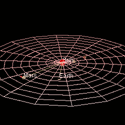

Mars is the fourth planet from the Sun and the second-smallest planet with a thin atmosphere, having the surface features reminiscent both of the impact craters of the Moon, and the valleys, deserts and polar ice caps of Earth. It is the most widely searched planet for life.
It is hypothesized that the Solar System formed from a giant rotating ball of gas and dust known as the pre-solar nebula. Much of it formed the Sun while more of its dust went on and merged to create the first proto-planets. Mars was one of these planets and after the gravity pulled enough swirling gas and dust, it became the fourth planet from the Sun.
Mars is about 227.9 million km / 141.6 million mi or 1.5 AU away from the Sun. It takes sunlight about 13 minutes to reach Mars. The diameter of Mars is 6.779 km or 4.212 mi, slightly more than half the size of Earth. In a way, its diameter is about the width of the continent of Africa. Mars’s mass is 6.42 x 1023 kilograms, about 10 times less than Earth and a volume of 1.6318 x 10¹¹ km³ (163 billion cubic kilometers) which is the equivalent of 0.151 Earths. Its entire surface area is similar to that of all the Earth’s continents combined
It is estimated that Mars has a dense core with a radius between 930-1.300 miles / 1.500 – 2.100 kilometers. It is made up primarily of iron and nickel with about 16-17% sulfur. The iron sulfide core is thought to be twice as rich in lighter elements then Earth’s core. The core is surrounded by a silicate mantle which formed many tectonic plates and volcanic features on the planet that now appear to be dormant. Besides silicon and oxygen, the most abundant elements in Martian crust are iron, magnesium, aluminum, calcium and potassium, an average thickness of the planet’s crust has been estimated to be about 50 km / 31 mi, with a maximum thickness of 125 km / 78 mi. In comparison, Earth’s average crust is about 40 km / 25 mi.
One rotation/day on Mars is completed within 24.6 hours while a whole trip around the Sun or year, is completed within 669.6 days.Mars has a relatively pronounced orbital eccentricity of about 0.09. Of the seven other planets in the Solar System, only Mercury has a larger orbital eccentricity. It is known that in the past, Mars had a much more circular orbit. At one point, 1.35 million Earth years ago, Mars had an eccentricity of roughly 0.002, much less than that of Earth today. It is believed that the closest distance between Earth and Mars will continue to mildly decrease for the next 25.000 years.
